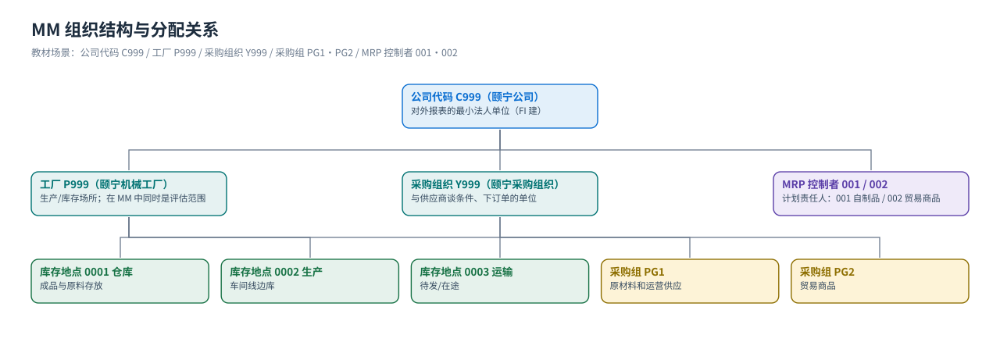
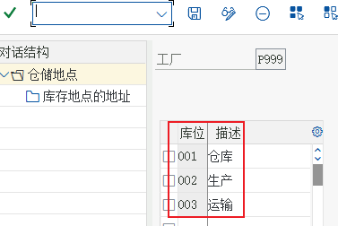
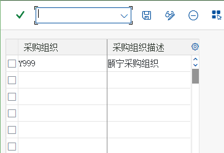

组织结构
公司代码 / 工厂 / 库存地点 / 采购组织 / 采购组 —— 先给数据定坐标
组织数据是 SAP 的「坐标系」：它先在后台把公司代码、工厂、采购组织这些「格子」画好，之后每一张主数据和每一张单据都挂在这些格子上。教材的 MM 模块前 8 个任务全在做这件事，顺序不能颠倒。
三层结构一张图
{kind=link}

① 企业结构（Enterprise Structure）
| 对象 | 教材任务 | 含义 | MM 里决定什么 |
|---|---|---|---|
公司代码 Company Code C999 | （FI 任务 01 建） | 对外出具财务报表的最小法人单位 | 会计凭证落在哪套账上 |
工厂 Plant P999 | 任务 01 | 生产/库存的场所；在 MM 中也是评估范围（物料价值按工厂算） | 库存地点、物料评估、自动记账科目（可再归组成评估分组代码） |
库存地点 Storage Location 0001/0002/0003 | 任务 02 | 工厂内具体存放位置（仓库/生产/运输） | 收货、发货、转储时的必填项；物料的库存地点视图 |
| 物料组 Material Group | 任务 09 | 按用途/品类对物料分组，用于统计与采购分析 | 物料主数据必填、采购分析维度 |
MRP 控制者 MRP Controller 001/002 | 任务 05 | 负责某类物料计划的人/岗位 | 物料主数据 MRP 视图的必填项，MD04/MD05 的筛选键 |
怎么在自己系统里看工厂清单：
OX10（或 IMG 企业结构 → 定义 → 后勤常规 → 定义、复制、删除、检查工厂）；库存地点：OX09；公司代码 OX02。已分配关系：OX18（工厂→公司代码）、OX01（采购组织→公司代码）。② 采购结构（Purchasing Structure）
| 对象 | 教材任务 | 含义 | 决定什么 |
|---|---|---|---|
采购组织 Purchasing Organization Y999 | 任务 03 | 为工厂采购、并与供应商谈条件的组织单位（教材：颐宁采购组织） | 采购订单的归属、物料主数据采购视图、信息记录的组织层 |
采购组 Purchasing Group PG1/PG2 | 任务 04 | 采购组织内部「谁负责买」的分组（PG1 原材料和运营供应 / PG2 贸易商品） | 订单、请购、信息记录上的采购组字段（统计与权限） |
| 分配关系 | 教材任务 | 基数 | 含义 |
|---|---|---|---|
| 工厂 → 公司代码 | 任务 06 | 多对一 | 工厂的账落在哪个公司代码（教材：P999 → C999） |
| 采购组织 → 公司代码 | 任务 07 | 多对一 | 采购组织的采购行为记在哪个公司代码下 |
| 工厂 → 采购组织 | 任务 08 | 多对多 | 哪些采购组织可以为这个工厂采购（教材：Y999 ↔ P999）；一个采购组织可以同时服务几个工厂 |
③ 计划与评估结构（教材任务 10–21）
| 对象 | 教材任务 | 作用 |
|---|---|---|
| 计划边际码（浮点） | 任务 10 | 在操作、产前、产后、订单下达各阶段各留 1 天缓冲 —— 防「刚好来不及」 |
| 工厂参数（库存侧） | 任务 11/12 | 预留的提前/过期可用天数、是否自动创建物料的库存地点视图 |
| 税务代码缺省值 | 任务 13 | 发票校验默认带出 13% 增值税（中国税法） |
| MM 初始期间 | 任务 14 | 物料账只能按月开、逐月往后开；上线时设定初始期间（如 2021.12 上线则设为 2021.11） |
| 工厂参数（MRP 侧） | 任务 15/16/17 | 由 0001 模板工厂复制到 P999；激活 MRP；定义 MRP 清单/计划运行的号码范围 |
| 物料类型属性 | 任务 18 | HAWA / ROH / FERT 等在各工厂是否更新数量与价值 |
| 评估控制与评估分组代码 | 任务 19/20 | 允许把工厂归组（评估分组代码 CN01）统一维护自动记账规则 |
| 评估类 | 任务 21 | 「这个物料记到哪个存货科目」的第二个键（3000 / 3100 / 7920） |
组织数据决定了什么（背下来这一张）
| 问题 | 答案由谁决定 |
|---|---|
| 这个物料在哪个工厂有库存、值多少钱？ | 工厂（= 评估范围）+ 物料 → 物料评估（MBEW） |
| 收货物料该记到哪个存货科目？ | 评估分组代码/评估范围 + 评估类 + 移动类型 → 自动记账（OBYC） |
| 这张采购订单属于谁、谁负责？ | 采购组织 + 采购组 + 工厂 |
| 发票校验默认什么税码？ | 税码缺省值配置（任务 13）+ 供应商/物料税分类 |
| 谁能看到/审批这张请购？ | 组织数据 + 权限 + 释放策略 |
| MRP 跑出来的请购交给谁跟？ | MRP 控制者 + 采购组 |
教材画面（组织与后台参数）

{kind=link}

{kind=link}
